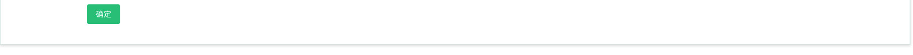
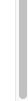

进件阀值
页面说明：
1、产品新增/编辑中，若产品为API产品，则展示新增字段“进件阀值”，其为非必填字段，仅支持输入数字；
2、若该API产品配置了进件阀值，则需监控统计该产品当天的进件数（推单成功则为进件），当该产品进件数大于或等于配置的进件阀值时，自动将产品下线；
3、次日凌晨00:00:00，自动将因到达或超过设置的进件阀值而被自动下线的API产品，自动进行上线，APP端根据该产品原配置的排序进行展示，且将统计的进件数归零后重新统计；
4、若未设置进件阀值，或进件阀值被清空，则不需监控对应API产品当天的进件数；